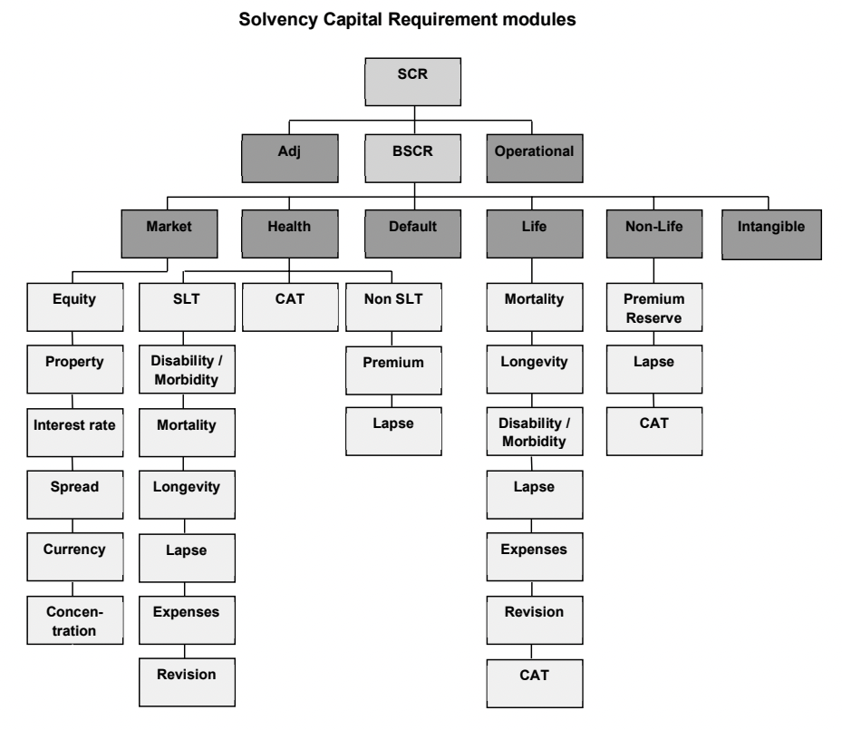

Solvency valuation and capital
The quantitative part of a solvency framework brings together the valuation of assets and liabilities, the calculation of capital requirements, and the assessment of the capital available to meet them. This page develops those ideas using the Solvency II framework and the distinction between best estimate liabilities, the risk margin and own funds.
On this page
The detailed EU examples use the framework applying before 30 January 2027, as explained in the preceding chapter. UK rules and the revised EU rules have different parameters and conditions.
The solvency balance sheet
A solvency balance sheet compares the value of the insurer’s assets with its technical provisions and other liabilities. The excess contributes to own funds, which are then assessed for eligibility to cover capital requirements.
| Item | What it represents |
|---|---|
| Assets | Investments, reinsurance recoverables and other recognised assets. |
| Best estimate liability | Present value of expected future benefits and expenses less premiums, within the contract boundary. |
| Risk margin | An additional allowance for the cost of supporting non-hedgeable risks as the existing business runs off. |
| Other liabilities | Items such as tax and other amounts owed by the insurer. |
| Own funds | Capital resources recognised under the solvency rules, subject to adjustments and eligibility limits. |
| SCR and MCR | Two capital thresholds against which eligible own funds are compared. They are not liabilities and are not added together. |
Technical provisions normally comprise the best estimate liability plus the risk margin. Capital above the SCR is a further buffer; it is not part of the technical provisions.
Valuation of assets
Important asset categories on the Solvency II balance sheet include:
Investments (e.g. equities, bonds, property, etc).
Reinsurance recoveries.
Participations (i.e. holdings that create a participation under the rules, including holdings of at least 20% of voting rights or capital).
Valuation of investments
Assets are required to be valued at market value, based on readily available market prices in orderly transactions that are sourced independently (i.e. quoted market prices in active markets).
If such prices are not available, then mark-to-model techniques can be used, provided that these are consistent with the overall market-consistent (or 'fair value' or 'economic value') approach. That is, the prices produced should be the amount at which the assets could be exchanged between knowledgeable willing parties in an arm's length transaction. Unquoted equities, unquoted derivatives, and property are examples of assets for which mark-to-model techniques may be required.
This was a significant change for much of Europe, where book values (i.e. original cost, possibly with depreciation) were often used under the previous regulatory regime.
Prudent person principle
Solvency II applies a principles-based investment requirement known as the 'prudent person principle', alongside specific requirements for linked business.
This principle has been developed from a legal concept which requires advisers to only make investment decisions for their clients which a prudent person would make. This principle requires insurers to develop their own set of risk indicators for the purpose of making investment decisions rather than depending solely on risk assessments performed by third parties (e.g. asset managers and credit rating agencies).
For example:
Insurers must only invest in assets and instruments whose risks can be properly identified, measured, monitored, managed, controlled, and reported for the purpose of appropriately accounting for them in the assessment of their overall solvency needs.
All assets of an insurer must be invested in such a manner as to ensure the security, quality, liquidity, and profitability of the insurer's overall assets.
Insurers should ensure that the investment of assets is done in the best interest of policyholders.
Companies need to assess their ability to manage any non-standard asset classes before investing in them. They must also have strong monitoring and control procedures in place in respect of any investments that are not traded on a regulated market.
Reinsurance recoveries
Recoveries expected from reinsurance are shown as an asset on insurers' balance sheet, rather than as a reduction in gross liabilities.
The fair value principle for valuing assets applies to reinsurance recoveries.
Reinsurance recoveries must be adjusted to allow for the best estimate of losses arising due to reinsurer default. This is calculated as the present value of expected losses in each future year. This adjustment is usually small, since the probability of reinsurer default is normally considered to be low (depending on the credit rating and security of the reinsurer).
Participations
Participations mainly arise when considering groups or where companies have outsourcing subsidiaries.
The overall market-consistent valuation approach also applies for participations.
Valuation of technical provisions
Technical provisions, which are also based on a market-consistent valuation approach, should represent the amount that the insurance company would have to pay to immediately transfer their obligations to another insurance company.
As with the valuation of assets, the valuation of technical provisions should represent a fair value (i.e. the price charged in an arm’s-length transaction by a knowledgeable and willing party). In practice, however, such liability values are rarely directly observable and thus need to be modelled using market-consistent assumptions.
Technical provisions are given by the sum of the following two constituents:
Best estimate liabilities. This is the present value of expected future cashflows (benefits plus expenses less premiums) based on best estimate assumptions. Discounting is performed using the relevant risk-free rate term structure.
A risk margin.
Life insurance cashflows can be categorised as either hedgeable or non-hedgeable:
Hedgeable cashflows are those which can be replicated by a financial instrument with a reliable market value. For hedgeable cashflows, the technical provisions are equal to the market value of those hedging instruments. In this case, separate calculation of the best estimate liability and risk margin is not required. However, most life insurance cashflows are not hedgeable.
The investment element of a unit-linked maturity guarantee can illustrate replication, if matching financial instruments exist. The whole policy may still contain mortality, lapse, expense or other non-hedgeable risks. In this case, the replicated investment payoff could be valued using the unit fund and matching put options. This does not automatically provide a complete valuation of all policy cashflows.
Non-hedgeable cashflows are those which cannot be replicated by financial instruments with a reliable market value. For non-hedgeable cashflows, the technical provisions must be calculated as the sum of the best estimate liability plus a risk margin. Both components incorporate the discounting required by their respective calculation methods.
Technical provisions are then equal to the sum of the values of the hedgeable and non-hedgeable cashflows.
The calculation of technical provisions should be segmented into homogeneous risk groups and, at a minimum, the prescribed lines of business.
Best estimate liabilities
Method
The best estimate liability (BEL) is the present value of expected future cashflows, discounted using a risk free yield curve. These cashflow projections should ideally be performed on a policy-by-policy basis. However, approximations are permitted and grouped model points can be used provided that certain conditions are met (including validation of accuracy).
Assumptions
All assumptions used in the BEL calculation should be best estimate (with no prudence margins).
Cashflow projections should allow for all expected decrements and policyholder actions, including lapses.
In setting assumptions to reflect realistic policyholder behaviour, companies should allow for the fact that policyholders are likely to behave differently in different circumstances.
For example, the rate at which an option is exercised by policyholders may depend on the following:
The extent to which the option is in-the-money.
Policyholder awareness of the option (e.g. from company communications or media coverage).
Changes in the financial position of the company offering the option.
Insurers should account for all relevant available data (both internal and external) when deriving assumptions to reflect the characteristics of their insurance portfolio.
Future premiums can be accounted for up to the 'contract boundary'. The 'contract boundary' is broadly defined as the point at which a company can unilaterally terminate the contract and refuse to accept a premium (or change the premium/benefits in such a way that they fully reflect the risks).
For life insurance policies, the contract boundary usually means the maturity or expiry date of the contract (or, in some cases, an earlier date at which premiums or benefits are reviewable so that they fully reflect the risks). For example, a review point may form a contract boundary where the insurer has a substantive unilateral right to reprice the relevant risks fully. A premium-review clause alone is not sufficient.
Allowance for future expenses needs to consider both overheads and directly attributable expenses. Expense inflation should also be allowed for. Expenses should reflect realistic servicing of the obligations as they run off. A separate arbitrary closure margin is not part of a best estimate, but shrinking volumes do not justify ignoring future overheads.
For some liabilities (including financial guarantees and options) a market consistent simulation or stochastic analysis is likely to be the most appropriate calculation approach. However, a deterministic closed form solution could be acceptable in some cases, depending on the risks involved and the materiality.
With-profits
For with-profits business, discretionary benefits (e.g. future reversionary and terminal bonuses) need to be allowed for in technical provisions.
For business that incorporates a discretionary element, the BEL should be calculated separately for guaranteed and future discretionary benefits. For example, for a traditional with-profits contract the liabilities relating to guaranteed benefits (including bonuses already declared in previous years) should be calculated separately from the liabilities relating to future (expected, but currently non-guaranteed) bonus declarations.
The BEL calculation therefore needs to allow for how investment strategy might change under each stochastic simulation. Calculations also need to reflect realistic management actions (e.g. changes in reversionary bonus rates, equity backing ratios, and charges that vary with economic conditions). The equity backing ratio is the proportion of the fund invested in higher-risk higher-return assets such as equities. Calculations should also reflect realistic policyholder behaviour (e.g. levels of withdrawals that vary according to the relative attractiveness of guarantees under different economic conditions).
Calculation of the BEL should also allow for any charges deducted from policyholders' funds.
The future discretionary benefits should relate to normal expected bonus distributions only. This should not include the distribution of the estate, unless a formal distribution plan has been approved by the national regulator.
The BEL for with-profits business should not include the value of shareholder transfers in respect of future bonus declarations. Though shareholder transfers are not included as a liability, they should be valued (separately) to the extent that such transfers relate to future discretionary benefits recognised in the BEL. This (separate) value of shareholder transfers will instead be included in own funds.
Unit-linked
For unit-linked business, the unit and non-unit components may be separated for the purposes of determining technical provisions.
It is possible for the BEL to be negative in this case and negative non-unit reserves can be held. The non-unit reserve will be negative if the best estimate value of future charges exceeds the value of future expenses and benefit costs. It is possible, particularly early in the contract term, for the negative non-unit reserve to outweigh the positive unit reserve so that the BEL overall is negative. It is also possible for the BEL to be negative for non-linked contracts if the best estimate value of future premiums exceeds the value of future claims and expenses. This will usually be the case for profitable regular premium business that has been recently written.
Risk-free discount rates
The BEL is calculated by discounting the expected future cashflows using a risk-free yield curve.
The risk-free discount rates are published by EIOPA on a monthly basis. Insurers must use these rates and cannot set their own discount rates.
The EIOPA risk-free discount rates are based on a stated methodology with the intention that they can be replicated by insurers (and other interested parties).
Risk-free yield curves are also published by EIOPA for each of the key currencies within the EU insurance market. This ensures consistency between insurers across the EU whilst also allowing for the different interest rate environments across the different EU economies. This information is useful, for example, if an EU insurer is valuing the liabilities of an overseas subsidiary.
The risk-free rates are based on swap rates where there is a sufficiently deep and liquid swap market, or government bond yields otherwise. A credit risk adjustment is then applied to these rates (by EIOPA) to reflect the risk of default of the counterparty. This credit risk adjustment is applied as a downward shift to the observed market yields.
For longer-term maturities for which data are not available, the yield curve is extrapolated to a defined long-term equilibrium rate. The Smith-Wilson method is used to perform this extrapolation.
The matching adjustment
Where insurers have long-term predictable liabilities and can hold matching assets to maturity, they can be less exposed to changes in illiquidity spreads than an investor who may need to sell those assets early.
The matching adjustment can apply to annuity business where bonds can be held to match the nature, term, and currency of the expected benefits. For annuities without surrender options, the insurer can purchase matching bonds at outset without concerns of having to sell them before the redemption proceeds of the bonds are paid. Holding an asset to maturity reduces exposure to forced sales caused by price movements. Credit risk, cashflow mismatch and liquidity needs still matter.
In such cases, insurers are allowed to adjust the risk-free discount rate in line with the spread movements of their matching assets. This means that the discount rate can be increased to take credit for the extra return offered by corporate bonds (over government bonds) that relates to the illiquidity premium. By using a higher discount rate, the value of the insurer's liabilities is reduced.
The use of the matching adjustment must be approved by the regulator and there are strict requirements for the eligibility of assets and liabilities.
For example:
The assigned asset and liability portfolio must be identified and managed separately, with restrictions on using its assets for other obligations.
Assets must be bond-like.
The portfolio is managed with the intention of holding matching assets to maturity, subject to permitted changes.
The liabilities and any policyholder options must satisfy the applicable eligibility conditions; surrender rights are tightly constrained.
If the insurer ceases to satisfy the matching-adjustment conditions, it must notify its supervisor and follow the applicable remedial requirements. The consequences and timescales depend on the jurisdiction and version of the rules.
The MA is derived by taking the spread on the portfolio of matching assets and deducting the 'fundamental spread'. The 'fundamental spread (FS)' is an allowance for the credit risks retained by the insurer in respect of the matching assets. The FS is published by EIOPA.
The discount rate used by an insurer who takes credit for a MA is therefore equal to the risk-free rate, plus the spread on the insurer's own assets, less the fundamental spread. The spread on the insurer's matching assets will be comprised of a credit spread and an illiquidity spread. Deducting the fundamental spread aims to give a discount rate that is equal to the risk-free rate plus the illiquidity premium on the matching assets.
The MA is calculated by the insurer and is specific to them (since it is based on their own mix of matching assets).
Volatility adjustment
For eligible liabilities to which a matching adjustment is not applied, insurers may use a 'volatility adjustment (VA)' to the risk-free discount rate.
The purpose of the VA is to reduce the risk of forced sales of assets in the event of extreme bond spread movements. When asset values fall substantially, insurers (and banks) may need to sell certain assets and buy safer assets in order to protect their solvency. Sales of such assets will lead to further falls in their prices, leading to pro-cyclicality. Ultimately, forced sales may lead to unreliable market values which no longer represent the true worth underlying the assets.
The idea of the VA, therefore, is to allow insurers to place a lower value on their liabilities in times of general economic stress, thus reducing the need to sell certain assets during a crisis and dampening the effect of pro-cyclicality.
The VA is based on the spreads of a representative portfolio of assets for each relevant currency (or for each national insurance market, where assets held by insurers in that market are under particular stress).
The VA aims to increase the discount rate to reflect the portion of the spread that is not attributable to a realistic assessment of expected losses or credit risk. Thus, if a market panic causes corporate bond prices to fall (and hence spreads to widen) without any corresponding change in default risk then a higher discount rate may be used to value liabilities.
Risk-free discount rates which include the addition of a volatility adjustment are also published by EIOPA.
Use of the VA is subject to certain risk management requirements. For example, insurers must have a liquidity plan and perform sensitivity analysis. In some EU member states, use of the VA is also subject to prior supervisory approval.
The risk margin
The purpose of the risk margin (RM) is to increase the technical provisions to the amount that would have to be paid to another insurance company in order for them to take on the best estimate liability.
The risk margin therefore represents the theoretical compensation for the risk of future experience being worse than best estimate assumptions, and for the cost of holding regulatory capital against this risk.
The RM is determined using a 'cost of capital' method. This method is based on the cost of holding capital to support those risks which cannot be hedged. Such non-hedgeable risks include all insurance risks, reinsurance credit risk, operational risk, and 'residual market risk'. One example of 'residual market risk' is where liability cashflows are longer duration than the duration of available risk-free assets.
The calculation of the risk margin using the cost of capital method involves the following steps:
The capital required to support the relevant risks at each future projection date during the run-off of existing business is projected. Each year’s cost of holding that capital is discounted from the end of the year. Under Solvency II, the projected capital requirement is the non-hedgeable SCR.
The projected capital amounts are then multiplied by a cost of capital rate. This rate can be considered the cost of raising incremental capital in excess of the risk-free rate. Alternatively, it represents the frictional cost to the company of locking in this capital to earn a risk-free rate rather than being able to invest it freely to earn a higher reward. Under the EU framework applying before 30 January 2027, the prescribed cost-of-capital rate is 6% a year. The revised EU framework reduces it to 4.75% and changes the calculation. UK rules use a different specification. The rate and formula therefore need to be matched to the valuation date and jurisdiction. EU amending regulation.
Each projected capital amount is multiplied by the cost-of-capital rate, discounted using the relevant risk-free rate, and summed to give the overall risk margin.
When calculating the risk margin, the insurer should not include any allowance for the matching adjustment or volatility adjustment.
A non-simplified full projection of the SCR for each future year (in the first step) would be too complex as it would potentially involve nested stochastic calculations. Various simplifying approaches may therefore be used. For example, the insurer may instead select a driver (e.g. reserves or sum at risk) which has an approximately linear relationship with the required capital or its components. The initial capital can be expressed as a percentage of that driver and the projected capital (i.e. the non-hedgeable SCR) can then be approximated as the same percentage of the projected values of the driver. In practice, however, more complex methods using a combination of drivers and correlations may instead be used.
The risk margin must be disclosed separately for each line of business.
However, the aggregate risk margin can be reduced to allow for diversification benefits between lines of business up to entity level. The allocation of the diversification benefit between business lines can be approximated by apportioning the total diversified risk margin across business lines in proportion to the SCR. For example, suppose an insurer sells only term assurance and annuities and has £34m of diversified capital for the risks included in the risk-margin calculation. If the standalone capital amounts for term assurance and annuities were £10m and £30m respectively then a simple proportional allocation of the relevant time-zero capital to term assurance would be £10m * (£34m / (£10m + £30m)) = £8.5m.
The solvency capital requirement (SCR)
The SCR is a Value-at-Risk (VaR) measure based on a 99.5% confidence level for the loss over one year of an insurer's basic own funds.
Basic own funds broadly comprise the excess of assets over all liabilities, plus qualifying subordinated liabilities and subject to regulatory adjustments. They are not simply assets minus technical provisions.
There is a prescribed list of risk groups that the SCR has to cover, which are the following:
Non-life underwriting risk.
Life underwriting risk.
Health underwriting risk.
Market risk.
Counterparty default risk.
Operational risk.
The SCR can be calculated using either a standard formula (prescribed by the regulator), their own internal model, or a combination of these approaches. The standard formula uses standard prescribed stress tests (or factors) which are then aggregated using prescribed correlation matrices to give the SCR. Firms using the standard formula are expected to justify that this is appropriate for their own circumstances. If using an internal model, this must have regulatory approval and must meet a number of standards including the 'use test'. The 'use test' requires the company to demonstrate that the internal model is widely used within the company and plays an important role in its decision making and governance processes.
Some companies may also adopt a partial internal model, which uses a combination of internal model and standard formula approaches. Simplifications in the calculation of the SCR may be applied, provided that they are proportionate to the nature, scale, and complexity of the risks involved.
When calculating using the standard formula, insurers may replace certain specified underwriting-risk parameters with undertaking-specific parameters where the rules permit this and supervisory approval is obtained. This is not permission to replace any standard-formula assumption. These are known as 'Undertaking Specific Parameters (USPs)'. Regulatory approval is required to use USPs. USPs are assumptions based on the insurer's own data and should be calibrated at least annually. USPs, if used in the SCR calculation, should also be used as a key input into the insurer's ORSA (since the ORSA should account for the specific risk profile of the company).
The range of possibilities for the SCR calculation (in decreasing order of complexity of calculation) is as follows:
Full internal model.
Partial internal model.
Standard formula with undertaking specific parameters ('USPs').
Standard formula.
Standard formula with simplifications.
Additional constraints apply to the calculation of the SCR if there are ring-fenced funds with limitations on capital fungibility (i.e. restrictions on the extent to which the capital can readily be transferred between funds).
The benefit of risk mitigation techniques can be recognised in the SCR, provided any basis risk is immaterial or can be reflected in the SCR. All residual risks (e.g. counterparty risk arising from risk transfer arrangements) should be recognised. Dynamic hedging is not permitted to be recognised under the standard formula approach, but may be allowed for within an internal model.
The national regulator also has the power to require a capital add-on to be held in excess of the SCR calculated by the company. For example, where some aspect of the company's risk profile differs from the assumptions underlying the standard formula and the risk is not being internally modelled a capital add-on may be required to reflect the risk appropriately.
Standard formula
Risk modules and sub-modules
The following diagram illustrates the structure of the SCR calculation under the standard formula:

The basic SCR is calculated by considering different modules of risks:
Market (equity, property, interest rate, credit spread, currency, and concentration).
Counterparty default.
Insurance (assessed separately for life, health, and non-life business).
Intangible assets.
Critical illness and income protection may be classified as SLT ('Similar to Life Techniques') health insurance business. The classification depends on the technical basis used. 'Non-SLT' covers business not pursued on a similar technical basis to life insurance, such as much private medical insurance.
Solvency II requires that an intangible asset is only assigned a value if it can be valued and sold as a separate asset in an active market. In practice, most intangible assets of insurers (e.g. goodwill, brand names, etc) are not tradable in active markets and no value will be assigned to them under Solvency II. The intangible asset component of the BSCR is therefore likely to be small.
The life underwriting module reflects the risks arising from life insurance obligations in relation to the perils covered and the assumptions influenced by the processes used in the conduct of business.
For life insurance, the insurance risk module comprises the following sub-modules:
Mortality. Mortality risk is the risk of loss (or of adverse change in the value of insurance liabilities) resulting from changes in the level, trend, or volatility of mortality rates in circumstances where an increase in the mortality rate leads to an increase in the value of insurance liabilities.
Longevity.
Disability/morbidity.
Lapse.
Expenses.
Revision. 'Revision risk' refers to the risk of adverse variation of an annuity's amount as a result of unanticipated changes to the claims process. This is intended to cover only genuinely reviewable annuities and not those that are index-linked. Such 'genuinely reviewable annuities' refer to annuities that arise from non-life insurance claims (e.g. accident insurance) where there is the risk that the annuity amount might change (e.g. due to a change in the health of the injured person).
Catastrophe (e.g. pandemic).
Standard formula calculation
The SCR is first calculated for each module.
For the market and insurance risk modules, each individual stress is performed separately according to detailed rules.
The calibration and application of each stress is specified within the standard formula. For example:
The market risk module requires:
A -25% stress to property values.
Upward and downward currency shocks, subject to specified exceptions and calibrations.
The life underwriting risk module requires:
An immediate and permanent 15% increase in mortality rates.
An increase of 10% in future expenses and one percentage point in the annual rate of expense inflation.
The SCR for each individual risk is then determined as the difference between the net asset value in the unstressed balance sheet and the net asset value in the stressed balance sheet. For this stress calculation, net asset value reflects assets less the best estimate and other relevant liabilities, with the risk margin held unchanged. In a simplified balance sheet containing only assets and insurance liabilities, the change can therefore be calculated using assets less the BEL. Holding the risk margin unchanged avoids circularity, because its calculation itself depends on projected capital requirements.
For risk i, the capital requirement is:
SCRᵢ = max(0, NAV before stress − NAV under stress i).
In determining the values of assets and BEL under each stress, adverse changes in policyholder option take-up rates should be allowed for. The beneficial effects of any risk mitigation techniques and any future management actions can also be accounted for (provided certain specified conditions are met).
The individual risk capital amounts are then combined across the risks within the module using a specified correlation matrix. The module SCR is calculated as:
Module SCR = √(Σᵢ Σⱼ Corrᵢⱼ × SCRᵢ × SCRⱼ)
where SCRᵢ is the capital requirement for risk i and Corrᵢⱼ is the prescribed correlation between risks i and j.
For example, under Article 136 of the Solvency II delegated regulation, the specified correlation matrix for the life underwriting risk module is the following:
| Risk | Mortality | Longevity | Disability | Lapse | Expense | Revision | Catastrophe |
|---|---|---|---|---|---|---|---|
| Mortality | 100% | −25% | 25% | 0% | 25% | 0% | 25% |
| Longevity | −25% | 100% | 0% | 25% | 25% | 25% | 0% |
| Disability | 25% | 0% | 100% | 0% | 50% | 0% | 25% |
| Lapse | 0% | 25% | 0% | 100% | 50% | 0% | 25% |
| Expense | 25% | 25% | 50% | 50% | 100% | 50% | 25% |
| Revision | 0% | 25% | 0% | 0% | 50% | 100% | 0% |
| Catastrophe | 25% | 0% | 25% | 25% | 25% | 0% | 100% |
For the counterparty risk submodule, the calculation approach is similar, but insurers must first differentiate between the following exposures:
Type 1 exposures - May not be diversified and the counterparty is likely to be rated (e.g. derivatives, securitisations, cash deposits, and reinsurance arrangements).
Type 2 exposures - Usually diversified and the counterparty is unlikely to be rated (e.g. receivables from intermediaries and policyholders).
Different detailed approaches are specified for the determination of the SCR for each type of exposure (which are then combined using a given formula).
Having obtained the SCR for each module, a further specified correlation matrix is used to combine them to give the Basic SCR (BSCR). Aggregation is therefore performed at multiple levels. In performing this aggregation, the intangibles risk module is taken to be completely separate from other risk modules (i.e. it does not contribute any diversification benefits). The BSCR is thus calculated as:
BSCR = √(Σᵢ Σⱼ Corrᵢⱼ × SCRᵢ × SCRⱼ) + SCR for intangible assets
Here SCRᵢ is the capital requirement for module i and Corrᵢⱼ is the prescribed correlation between modules i and j.
The correlation matrix that should be used in the combination of risk modules is the following:
| Module | Market | Default | Life | Health | Non-life |
|---|---|---|---|---|---|
| Market | 100% | 25% | 25% | 25% | 25% |
| Default | 25% | 100% | 25% | 25% | 50% |
| Life | 25% | 25% | 100% | 25% | 0% |
| Health | 25% | 25% | 25% | 100% | 0% |
| Non-life | 25% | 50% | 0% | 0% | 100% |
To obtain the overall SCR, two adjustments are made to the BSCR.
Operational risk is added without recognising diversification with the other risk modules. The standard-formula calculation uses prescribed measures, including premiums and technical provisions; business where policyholders bear the investment risk has a specific expense-based treatment.
Loss-absorbing capacity allows for reductions in technical provisions and deferred taxes under stress. For example, discretionary benefits may be reduced under adverse conditions, or a deferred tax liability may fall because some previously expected gains will no longer arise.
The technical-provision adjustment compares capital calculations with and without the relevant loss absorption. The deferred-tax adjustment is assessed separately and depends on the tax consequences of the stress, including whether any tax benefit can be recognised. The combined adjustment, denoted Adj, is negative or zero in the following expression:
Overall SCR = BSCR + SCR for operational risk + Adj.
Internal model
Provided it has been approved by their regulator, an insurer can use an internal model as a full or partial alternative to the standard formula.
Partial internal models use an internal model for particular risk modules, sub-modules, or business units. For the authorisation of partial internal models, the same tests apply as for full internal models (though these tests may be adapted to take account of the limited scope of the model's application).
An internal model might be appropriate if the risk profile of the business differs significantly from the risk profile assumed in the standard formula and/or if the company already uses such a model for risk management or other decision-making purposes (e.g. pricing, investment strategy, etc). The supervisor can compel an insurer to develop an internal model if they feel that the standard formula is not appropriate for the risk profile of the company. Under such circumstances, the regulator may also impose a temporary capital add-on (to the SCR calculated using the standard formula) until an appropriate internal model has been developed.
Once an insurer has received authorisation to use an internal model, the company cannot revert to using the standard formula for the SCR (unless they can justify the circumstances and obtain approval from the regulator).
The overall capital requirements resulting from using an internal model will generally differ from the outcome of the standard formula calculation and may be either higher or lower depending on how the firm's tailored risk profile compares against the assumptions underlying the standard formula. The internal model must still generate an SCR based on the stated requirements, including coverage of the risk types in the standard formula and providing at least the equivalent protection to a 99.5% confidence level over one year.
The tests that an internal model must pass before it may gain approval are the following:
The 'use test'
Companies must demonstrate that their internal model is widely used throughout all relevant areas of the business and that it plays a significant role in the internal governance, risk management, and decision-making processes. The model should also be used in the economic and solvency capital assessments and capital allocation processes.
This test is seen as one of the most challenging aspects of gaining internal model approval. As well as embedding the model throughout the company and developing an effective risk culture, companies need to be able to evidence that this is the case. Evidencing this may, for example, be done by showing senior management decisions and sign-off of models and assumptions (internal governance) and having all risks identified by the risk management system as inputs into the internal model (risk management processes). Companies should also be able to demonstrate that their internal model plays a key role in their ORSA.
Statistical quality standards
A number of minimum quality standards must be met relating to assumptions and data, including probability distribution forecasting, the use of expert judgement, materiality considerations, and methods of aggregation.
For example:
The data used must be accurate, complete and appropriate.
The data sets used should also be updated at least annually.
The assumptions used must be consistent with those used in calculating the technical provisions.
A key challenge in meeting this requirement is that historical data available to calibrate extreme events is limited. In practice, some industry consensus has emerged for some of the stresses (e.g. credit spreads and property market movements). It is important, however, that insurers allow for their own specific features (e.g. the extent to which their actual holdings are more or less volatile than the holdings on which any industry consensus is based). Setting dependency structures and correlation factors that apply under extreme conditions is also challenging.
Calibration standards
These standards aim to assess whether the SCR derived from the internal model has a calibration equivalent to the VaR at 99.5% confidence over one year. Companies can use different confidence levels and time periods as long as they can demonstrate that these provide an equivalent level of policyholder protection. Supervisors may require companies to run their internal models using benchmark portfolios and data provided by the supervisor (rather than internal data) in order to verify the calibration of the model.
Profit and loss attribution
This includes a requirement to demonstrate how the categorisation of risk chosen in the internal model will be used to explain the causes and sources of actual profits and losses. For example, if there is a lapse risk module within the internal model, then it must be possible to measure and attribute profits/losses arising from lapses within the internal model.
Validation standards
The internal model must have been fully validated by the insurance company and must be subject to regular control cycle review, including testing results against emerging experience. For example, through sensitivity testing, independent reviews, and checking of model outputs (e.g. asset prices) against external sources of data.
Documentation standards
The design and operational aspects of the internal model must be clearly and thoroughly documented. The documentation must provide a detailed outline of the theory and assumptions underlying the model and indicate any circumstances under which the internal model does not work effectively.
Interactions between risks
It is also important for an internal model to recognise that a certain subset of events happening at the same time, with an overall one-year probability level of 1-in-200, may produce a higher capital requirement than combining all of the individual capital requirements for separate 1-in-200 events using a correlation matrix.
This is caused by 'non-linearity' and 'non-separability' of individual risks. 'Non-linearity' refers to the fact that the results of a stress are often not linear with respect to the magnitude of the stress (particularly where options and guarantees are involved). 'Non-separability' of risks refers to the ways in which different risk drivers interact with one another (e.g. a combined increase in longevity and expenses would be more detrimental than each stress in isolation for annuity business). Allowances need to be made for non-linearity and non-separability effects.
An internal model may be structured in any way that an insurer sees fit, provided the above tests are satisfied. The internal model does not have to follow the structure of the standard formula and may be based on stochastic simulations (rather than stress tests and correlation matrices), perhaps by use of copulas to model dependency structures.
Fitting the tails of the distribution
Calibration of internal models also requires care and expertise. In particular, it is important that the probability distribution used properly reproduces the more extreme behaviour of the variable being modelled, taking care to ensure that it does not understate the frequency of more extreme outcomes. As with all modelling, it is important to check the goodness-of-fit. However, since the purpose of this model is to calculate the 99.5% VaR, it is particularly important to achieve a good fit in the tails of the distribution.
The minimum capital requirement (MCR)
The MCR is defined as a simple factor-based linear formula which is targeted at a VaR measure over one year at an 85% confidence level.
Insurers do not actually perform VaR calculation to determine their MCR. Instead, they apply a prescribed simple linear formula which is given in the Solvency II rulebook.
For life insurance business, the formula is based on technical provisions and capital at risk on death or disability, multiplied by specified factors. These factors vary according to the type of benefits, including discretionary, linked and other guaranteed benefits.
The MCR must be calculated and reported to the regulator quarterly.
The linear MCR is subject to a corridor of 25% to 45% of the SCR, and then to an absolute monetary floor. That absolute floor can take precedence over the percentage corridor. The absolute floor differs by type of undertaking and is updated under the rules, so a calculation should use the amount applicable at the valuation date. Solvency II MCR rules.
Supervisory intervention levels
The SCR and MCR constitute two rungs of a 'ladder of supervisory intervention' under which severe prescribed supervisory authority action will be taken as a company's eligible capital falls below the SCR and approaches the MCR.
Supervisors can also act before a capital breach. A breach of the MCR triggers urgent intervention and a short-term finance scheme. Failure to submit an adequate scheme or restore compliance within the statutory period can lead to withdrawal of authorisation; withdrawal is not automatic at the instant of every breach.
For example, the supervisory actions might progress from:
requiring the company to submit a recovery plan.
various interventions by the regulator in the management of the company.
withdrawing the company's authorisation to sell new business.
An insurer is required to inform the regulator immediately if the MCR or SCR is breached, or if a breach is likely in the short-term.
Quality of capital resources
Own funds are the capital resources recognised by the solvency framework. They comprise basic own funds and ancillary own funds.
Basic own funds broadly comprise the excess of assets over liabilities, plus subordinated liabilities, subject to the prescribed adjustments. Subordinated debt remains a liability on the balance sheet; qualifying debt is then recognised in the own-funds calculation because of its loss-absorbing characteristics. It must not be counted twice. Solvency II definition of basic own funds
Ancillary own funds are resources that may be called upon to absorb losses but are not yet paid in, such as qualifying unpaid share capital or certain guarantees. Their recognition requires supervisory approval.
Capital is divided into tiers according to its loss absorbency and permanence:
Tier 1 is the highest-quality capital, available to absorb losses on a going-concern basis and in a winding-up.
Tier 2 has lower-quality loss-absorbing characteristics.
Tier 3 is the lowest-quality eligible tier and can include net deferred tax assets meeting the relevant conditions.
Subordinated debt is not automatically Tier 3. Its classification depends on the instrument’s terms. The criteria include whether it is paid up, its availability to absorb losses, its ranking in a winding-up, obligations to pay interest or dividends, its outstanding term, and incentives to redeem it. EIOPA rules on Tier 2 items
Restrictions apply to the capital that can cover each requirement. Under the EU framework, at least 50% of the SCR must be covered by Tier 1 and Tier 3 must be less than 15% of the SCR. The MCR must be covered by eligible basic own funds, with at least 80% Tier 1 and no Tier 3.
Where capital is restricted within a ring-fenced fund, such as some with-profits funds, it may support that fund’s own risks without being freely available elsewhere in the insurer. Entity-level adjustments reflect those restrictions. It is therefore inappropriate to assume either that all fund surplus is freely transferable or that only future shareholder transfers can support the fund’s own solvency.
Data quality
EIOPA has issued advice on 'Standards for Data Quality'.
This advice highlights the importance of having good quality data for the valuation of technical provisions.
This quality is deemed crucial for the following reasons:
The more complete and correct the data, the more consistent and accurate will be the final estimates.
The application of a wider range of methodologies for calculating the best estimate is made possible, improving the chances of application of adequate and robust methods in each case.
Validation of methods is more reliable and leads to more credible conclusions, once a reasonable level of data quality is achieved.
Effective comparisons over time and in relation to market data are possible, which leads to better knowledge of the business in which the undertaking operates and its performance.
It is also noted that the issue of data quality is relevant to other areas of the solvency assessment, such as the SCR. A consistent approach to data quality issues needs to be taken across Pillar 1, without disregarding the different objectives.